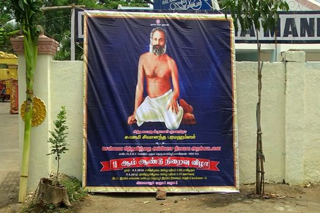
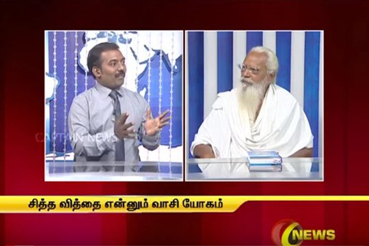
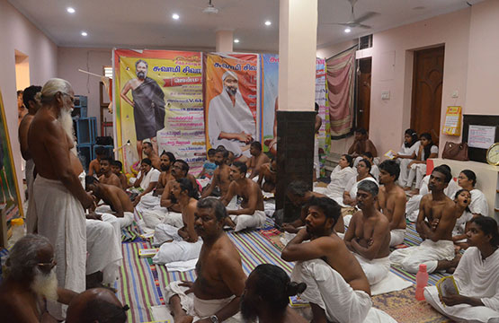

ஆத்ம நமஸ்காரம்
புருவமையத்தில் இரண்டு கை கட்டைவிரலையும் வைத்து மேல்முகமாக சேர்த்து உள்முகமாக பார்க்க வேண்டும். அந்த இடம் ஆத்மா வசிக்கும் இடம் . இப்படி ஆத்மா நமஸ்காரம் என்று கூறுவதால் உள்ளிருக்கும் ஆத்மாவுக்கு வணக்கம் வைக்கிறோம், அங்கு வணக்கம் செலுத்தும் போது அனைத்து ஜீவனுக்கும் வணக்கம் வைத்தார் போல ஆகும்.
அன்னம் புசித்தால் மரிப்பாரில்லை
அன்னம் என்பது அசனமாய் இருக்கும் வாயு. மாயை என்பது காணுகின்ற சராசரங்கள் அல்ல. நம்மிலிருந்து யாதொன்று இல்லாமல் போகிறதோ அதுவே மாயை, அது ஜீவ சக்தியான வாயு.
ஜீவனே ஈஸ்வரன்
நம்மில் உள்ளே இருக்கும் போது மட்டுமே சிவமாய் இருக்கிறது. அது சலித்து புலன் வழியாக வரும் போது ஜீவன், நசிக்காதபோது சிவன்.
மனமே குரு
அடங்கிய மனமே குரு. பந்தத்திற்கும் மோட்சத்திற்கும் மனமே காரணம். குரு சிஷ்யன் என்கிற நிலை இல்லை. அவனவனுக்கு அவனுடைய அடங்கிய மனமே குரு. மனதின் இடம் புருவமையம்.
ஜீவ சரித்திரம்
சிவானந்த பரமஹம்சருக்கு தனிப்பட்ட ஜீவ சரித்திரம் இல்லை. ஜீவன் ஒன்றே உள்ளது, அந்த ஜீவ சரித்திரமே சித்த வேதம்.
About Us
Chennai Siddha Vithai Abbiyasa Nilayam was started on year 2000 for the benefit Chennai Siddha Vidyarthis to have a place for koottu jebam / கூட்டு ஜெபம் and for Jeeva Samadhi / ஜீவ சமாதி when they achieve Jeeva Moksham / ஜீவ மோட்சம்.
During the 48th Jeeva Aikkiya Vizha of Brammashree Sharangapani father of Brammashree Raja Sundaram at Venkatapuram Siddha Vidyarthi’s Abbiyasa Alayam near Vellore, it was decided to start Chennai Siddha Vithai Abbiyasa Nilayam by the Madurai Tamizh Manila siddha Vidyarthi’s movement and senior Siddha Vidyarthis from, Chennai.
- Brammashree A.G Ganapathy
- Brammashree C. Kothandavelu
- Brammashree Pulavar Vinayagam
- Brammashree Ku. Mu. Sanmugam
- Brammashree Kumaran
- Brammashree Kannan
- Brammashree Azhagu Malai
- Brammashree Kothandam
- Suttha Sanmarkka Siddha Vidyalam, Otteri
- Brammashree Raja Sundaram
- Brammashree Latchumi Narasimhan, Korattur
- Brammashree Bala Subramanyam, President, Venkatapuram
- Brammashree Dhurai, Secretary, Venkatapuram
- Brammashree Chokkalingam, President, Madurai Tamizh Manila Siddha Vidyarthi Movement
- Brammashree P. R Krishna Ram, Secretary, Madurai Tamizh Manila Siddha Vidyarthi Movement.
From the day of Chennai Siddha Vithai Abbiyasa Nilayam inception, 1000’s of brothers and sisters were initiated with Siddha Vithai / சித்த வித்தை (Vaasi Yogam / வாசி யோகம்). Every week on Saturday evening between 5 PM to 7 PM the center conduct Siddha Vedam read and explanation to new comers. So by attending this class the public will get clarity on Swami Sivananda Paramahamsar’s preaching and get clarifications if any from our senior Siddha Vidyarthis. Whoever wanted to get the initiation of Siddha Vithai / சித்த வித்தை (Vaasi Yogam / வாசி யோகம் ) need to understand the Siddha Vedham / சித்த வேதம் in full and follow the activity guidelines (Nadavadikkai Kiramnagal) prescribed by Swami Sivananda Paramahamsar.
So by attending the weekly Saturday classes, anyone who is interested to attain Jeeva Moksham / ஜீவ மோட்சம் can get inception with the blessing of Swami Sivananda Paramahamsar without any religion or caste discrimination.And as per Swami’s order, since Siddha Vithai / சித்த வித்தை is about ones self realization and this initiation is strictly at Free of Charge. On Sunday between 11 AM to 2 PM at Chennai Siddha Vithai Abbiyasa Nilaym, Siddha Vedam will be read and explained to attendees, koottu Jebam carried on and then Sakdhini / சத்தினி served to public and to Siddha Vidyarthis. On every week Sakdhini is sponsored by our Siddha Vidhyarthi’s. Our journey in short is escribed below.With the decision made in year 2000, Chennai Siddha Vithai Abbiyasa Nilayam initially conducted koottu Jebam (group meditation) in Chindadhiripet. From there it moved to Simpsons group society building in Perambur then to Annadhana Samajam, Perambur and then to Ayanavarm. Again from there it was shifted to Perambur, Nel Vayal road then to Bharatha Madha elementary school in Perambur again to one more premises in Nel Vayal Road in Perambur. And now it is running in a ground floor portion at Anna Nagar East with the cardial help from Brammashree Shailesh, who volunteered to give this space for conducting weekly Siddha Vithai / சித்த வித்தைclasses on Saturday evening and to conduct Koottu jebam, Siddha Vithai / சித்த வித்தை initiation and Saddhini / சத்தினி on Sunday. The shifting of Chennai Siddha Vithai Abbiyasa Nilayam was non stop due to reasons like rental, insufficient space etc.
To have Jeeva Samadhi / ஜீவ சமாதி to our Siddha Vidyarthis, we managed to have a 2 acre land at Vada Madurai a village near Periya Palayam in Thiruvallur district. To formalize and strengthen the Chennai Siddha Vithai Abbiyasa Nilaya operations it was registered as Trust in 2016. Chennai Siddha Vithai Abbiyasa Nilayam conducts every year its Annual Day celebration as a two day celebrations wherein prominent speakers and Siddha Vidhyarthis are invited to talk about Siddha Vithai / சித்த வித்தை (Vaasi Yogam / வாசி யோகம் ) and spirituality. During this celebrations Anna Dhanam is provided to 1000s of publics and Siddha Vidyarthis.Our Trust also conducts periodic social welfare camps to the needed people in the society.To convey Swami Sivananda Paramahamsar’s message to the society we planned to build our own Nilayam and we believe with our own Nilayam we will have better facilities to new comers who are traveling from out station and other countries to come, stay here, undergo Siddha Vedham / சித்த வேதம் class and get initiation. And on top of all this own Nilayam will be a place for our Siddha Vidyarthis to do Jebam on daily basis. To make it happen we seek all Siddha Vidyarthi’s and public’s cordial support to donate possible monitory and material support.
And our Trust was recognized by Government of India for its noble act and granted 80G Income Tax exemption to donors.
Classes
Siddha Vedham / Vasi Yogam Classes are conducted on every Saturday from 5:00 PM to 7:30 PM at our Chennai Siddha Viddhai Abbiyasa Nilayam, Anna Nagar, Chennai.
During the Siddha Vedham (சித்த வேதம்) / Vasi Yogam (வாசி யோகம்) class our senior Siddha Vidyarthis will read the Siddha Vedham (சித்த வேதம்), explain the meaning of it and give initiation of Holy Siddha Viddhai (சித்த வித்தை).Those who are interested to understand life and attain Jeeva Moksham (ஜீவா மோட்சம்) can attend this class. Before getting the initiation of Holy Siddha Viddhai (சித்த வித்தை), it is mandatory to understand the meaning of Siddha Vendham (சித்த வேதம்). By considering the practical difficulties and time limitations Chennai Siddha Viddhai Abbiyasa Nilayam, decided that at least first 5 chapters of Siddha Vedham (சித்த வேதம்) to be understood clearly by people before getting the initiation. Subsequent to Saturday every Sunday morning between 11:00 AM to 12:00 PM Siddha Vedham (சித்த வேதம்) class will be conducted, so the other chapters which were not explained during Saturday can be listened and clarified.
Along with this from 12:00 PM to 01:15 PM Kootu Jebam (கூட்டு ஜெபம்) will be carried on by Siddha Vidyarthis. People who are willing to get the initiation can also be part of this Koottu Jebam (கூட்டு ஜெபம்) . There are many good things about Koottu Jebam (கூட்டு ஜெபம்), one can simply realize the deepness in Jebam (ஜெபம்) and Nishtai (நிஷ்டை) while being part of the Koottu Jebam (கூட்டு ஜெபம்). Senior Siddha Vidyarthis will identify the deserving ones and tell them either in the Saturday class or call them over phone to come on the said date for initiation. So people do not need to ask them like when the initation will be given. By looking at your sincerity, dedication and willingness Swami Sivananda Parmahamsar himself will make it happen to you. So all you need to do is be sincere. Since Siddha Viddhai (சித்த வித்தை) is about jeevan’s (ஜீவன்) self realization, this initiation is strictly free of charge.
Post to Koottu Jebam (கூட்டு ஜெபம்), who ever got initiation on that week will be given an opportunity to express themselves on their experiences that can be witnessed by people who are willing to get the initiation. Once they get initiation to Siddha Vidhdai (சித்த வித்தை) they are called are “Brammashree” (பிரம்மஸ்ரீ) / “Siddha Vidyarthi” (சித்த வித்யார்த்தி). In general during Sunday morning initiation will be given. After the self introduction of newly initatied Siddha Vidyarthis (சித்த வித்யார்த்தி) all the assembled Siddha Vidyarthis (சித்த வித்யார்த்தி) will congratulate in the name Swami Sivananda Paramhamsar and give an Athma Namaskaram (ஆத்ம நமஸ்காரம்). Once initiated and start practicing vaasi yogam (வாசி யோகம்)/ siddha viddhai (சித்த வித்தை) they are children of Swami Sivananda Paramhamsar. So every Siddha Vidyarthis (சித்த வித்யார்த்தி) are brothers and sisters. After congratulating new Siddha Vidyarthis (சித்த வித்யார்த்தி), it is time to congratulate the Sakthini (சத்தினி) sponsors and give an athma namaskaram (ஆத்ம நமஸ்காரம்) to them in the name of Swami Sivananda Paramhamsar. Then the non Siddha Vidyarthis (publics) will be served Sakthini (சத்தினி) first after that all Siddha Vidyarthis (சித்த வித்யார்த்தி) will have Sakthini (சத்தினி) as brothers and sisters in a sama bandhi bhojanam (சம பந்தி போஜனம்) without any inequality. In general this Sakthini (சத்தினி) is sponsored by one of the Siddha Vidyarthis (சித்த வித்யார்த்தி) every week. With this Sunday class ends.
Gallery
2019-ஆண்டு விழா காணொளி தொகுப்பு
2018-ஆண்டு விழா காணொளி தொகுப்பு
Captian TV காணொளி தொகுப்பு
புகைப்பட தொகுப்பு
Events
To get the books, please visit our Chennai Siddha Viddhai Abbiyasa Nilayam. Visit our contat-us page to know the address.
Books
Donate
For donations please visit our Nilayam or use the below bank account details to do bank transfer. Please ensure that the below form is filled so we can check and send the receipt to your address.
Account Name: Chennai Siddha Viddhai Abyasa Nilaya Trust
Type: Savings Account
Account Number: 6455985779
IFSC Code: IDIB000P218
The amount you are donating will be exempted under 80G of Indian Income Tax Act.
Contact Us
Phone :
Mobile: 9884724712
Email :
siddhavidya.chennai@gmail.com
Address :
சென்னை சித்த வித்தை அப்பியாச நிலையம்,
D-153,ஆர்.வி. நகர் (மித்ரா எதிர்ப்புறம்),
1வது முதன்மை தெரு ,
அண்ணா நகர் கிழக்கு,
சென்னை, தமிழ்நாடு- 600102
Chennai siddha Viddhai Abbiyasa Nilayam,
D-153, R.V. Nagar, 1st Main Road (opposite to Mithra),
Anna Nagar East,
Chennai. Tamil Nadu – 600102